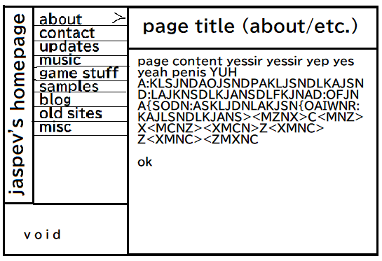
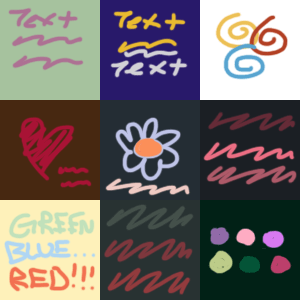

How This Site Was Made
Everything about this website, other than the custom domain name, was free (and even then, the domain name costs about 12 bucks per YEAR just for a cosmetic thing that you don’t need at all). This website was made in less than a week on a Windows 10 pc with Hugo, a popular static site generator, and hosted on Github Pages, a free static site hosting service working through Github. Anyone with a computer can make the site you are seeing now.
When I began making this website, before I did anything, before I wrote a single line of code, before I even knew that I would be using Hugo, I needed to know what my site was going to look like first. I had some kind of image in my head that I tried to sketch out at the time, that looked something like this:

After I whipped this masterpiece up in ms paint, I started recreating it just using html and css, and as you can tell, this isn’t exactly how the site turned out. When I was recreating it, I found that I didn’t really like the side header thing and I didn’t really like all the <hr> elements. So I turned it into the design you see today, but you can see some remnants that came from that simple mockup, like the nav on the left (with pretty much the same contents), and with the header and content on the right.
I also didn’t want to have a black and white site. So after I found the layout I liked, I needed to decide on a color palette. To do that, I just stole some colors directly from random photos, album covers, and random drawings and stuff off Twitter that I liked. I came up with 9 color palettes and decided on one.

After finishing the layout in html and css, I knew at the time that I didn’t want to make the whole site using nothing but html and css. I’ve made multiple sites before using just html and css, and I wanted more with this current site compared to the previous ones, and “more” would just be incredibly hard and tedious to make without something like a static site generator. A static site generator (at least the one I’m using) allows you to basically make a layout for your site (a layout being your style.css and index.html), then you can place variables like “{{.Content}}” in the place where something like a blog post would be, and it just kind of knows what content you want based on what page you’re on, to put it really simply. Then the actual content is written in markdown files. Specifically what you’re reading right now is in the blogs folder, and the blogs folder is placed in the content folder, and that’s kind of how my static site generator knows to display this specific blog to you.
But that’s basically it with the actual making of the site. I made a mockup in ms paint. I recreated that mockup in raw html and css, while making some small changes along the way. I found and learned how to use a static site generator that I liked (Hugo), and implemeted that raw html and css to work with Hugo. After that I used Github Pages to actually host my site, and I used Google Domains to buy my domain (whereas before the domain was jaspev.github.io).
I’d like to note that if you’re just starting making websites, you should use nothing but html and css at first (or just use Wordpress or something). Because static site generators aren’t “magic”. You still need to know html and css to create a site using static site generators, they just do a lot of copying and pasting for you that you would be doing otherwise. And don’t be discouraged, so many incredible websites can and have been made using raw html and css. When you’re starting, you just need to build a foundation of knowledge to build off of. (And even then, if you don’t have fun making a site with raw html and css, then you probably won’t have fun making a site with something like hugo.) But anyway, this isn’t a guide on how to make websites though…
If you want to see the Hugo code for this site, you can see it on my github, here. (I really don’t recommend learning from it though, I learned Hugo and put this site together in less than a week, so I might be doing everything wrong. But hey, the site works! So learn at your own risk.)
Thank you for reading! :)